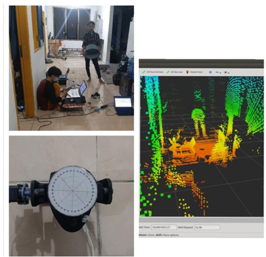

About
A highly motivated and enthusiastic person with interest in various aspects of robotics, including Embedded Systems, Automation, Electronics Design, IoT, DSP, FPGA, Computer Vision, Robot Operating System (ROS/ROS2) and Robotics Simulation. Holds a track record of winning several national competitions and possesses prior experience in research and development.
Projects
2024
In 2024, I haven't been involved in many projects yet, except from work or my hobby in robotics. I'm planning to build my career in Japan, so I've been spending a lot of time deepening my fundamental knowledge in electronics, robotics, as well as English and Japanese languages for my future career prospects.
Implementing Model Predictive Control (MPC) on Ackermann Drive Robot for Autonomous Vehicle Simulation on ROS Gazebo
I've tried implementing Model Predictive Control (MPC) on a simulated Ackermann drive robot described in URDF (Universal Robot Description Format). This allows the robot to predict future states and adjust its path accordingly. Utilizing the Robot Operating System (ROS), the robot navigates through dynamic environments using Gazebo for 3D simulation and RViz for visualization.
The robot relies on a Lidar sensor to understand its surroundings, spotting obstacles and other simulation-vehicles . It also uses odometry through dead reckoning to know its exact location amidst the chaos.

Through this project, I aim to show that autonomous navigation in dynamic environments is achievable, obviously with keen perception, smart planning, and accurate modeling, I'm paving the way for a future where autonomous vehicles can navigate the world around them effortlessly.
Keywords: Autonomous Vehicle, Robotics, Path Planning, MPC, ROS, Ackermann Drive, Gazebo, URDF
2023
This year, I spend the most of time to learn about electronics circuit in avionics application. Because, at this time I am working as electronics development engineer in one of defense industry in indonesia (PT. Infoglobal Teknologi Semesta) that heavily involved with military standard circuit and FPGA as the main controller.
Reverse Engineering Command and Weapon-Control Console (CWCC) of CAKRA-401 Submarine
KRI Cakra, a submarine of the 209/1300 type, was manufactured by Howaldtswerke in Kiel, Germany, in 1981. This type of submarine is widely utilized by navies around the world. The difficulty in sourcing spare parts for repairs poses a significant challenge. Therefore, it becomes essential to consider modernizing the submarine system.

Reverse engineering an old device with fully analog signals need to understanding its inner workings. documentation plays a crucial role in the reverse engineering process, especially for an old device with fully analog signals. Any documentation or technical specifications related to the device can provide valuable insights for us. We also utilizing tools like oscilloscopes to analyze signal characteristics, identifying electronic components, and tracing circuit paths on the PCB. Through this process, we recreate the schematic, unravel the function of each component, and, if possible, replicate the circuit for testing purpose.
The struggle of this project is, this submarine was built in 80’s in germany, it is using analog video signal that does not follow analog video standard at that time like PAL or NTSC. So I need to use flexible Video ADC chip as signal processing and find the best settings for the signals by analyzing the signal characteristics.
The result is looks like the same as the old one but with newer technology like FPGA, replacing CRT with LCD display, make it lighter, save a lot of space, simple and more reliable.
Keywords: FPGA, Analog signal, Signal Processing, Vector monitor, Reverse engineering
Reengineering Avionics: Rear Cockpit Monitor (RCM) for Hawk 100 Aircraft

The Rear Cockpit Monitor (RCM) on the Hawk 100 aircraft plays a crucial role as a co- pilot aid, enhancing situational awareness during flights. Serving as a Head-Up Display Monitor (HUDMON), the RCM displays video data from the aircraft's camera (CAM) and Head-Up Display (HUD) symbology.

The RCM enables the co-pilot in the rear cockpit to easily monitor critical flight information, including real-time video data and HUD symbology. Its integration into the Hawk 100 cockpit design reflects a commitment to operational efficiency and pilot coordination. The RCM plays a key role in improving situational awareness during flights, ensuring quick and efficient access to essential information for the co-pilot.
My objective is to designing new reliable PCB circuit by considering several safety parameters and military standard requirement also program the FPGA in VHDL language.
Keywords: FPGA, DSP, DDR-SDRAM, Image Processing, Electronic design
Measure the waves run-up using CNN image segmentation
The objective is to measure the heigh of the wave in real-time using CNN method from the top view. It used by someone from faculty of marine technology to analyse the physical model testing of coastal structures.
It was use U-Net architecture, achieved an accuracy rate of 94%, even human eye hard to see. I also adding a simple image processing to convert the heigh wave in standard unit, draw the value to the output image, save the data into CSV file for analysis purpose and so on.
Keywords: CNN, Image segmentation, Wave Run-up, Computer vision, Deep learning
Sound recognition using CNN in microcontroller for broken motor detection
Neural network training process requires high computing hardware. Thus, it is trained on a generic TensorFlow model. Moreover, training is only necessary if the customized dataset is suitable for deep learning models, as the application can also use pre-trained framework models. The dataset will be trained by TensorFlow and generate a model, but this model cannot be applied to the microcontroller yet. Because of this, the model is converted using TensorFlow Lite so that it can be applied to the microcontroller.
The model doesn't take in raw audio sample data, instead it works with spectrograms which are two dimensional arrays that are made up of slices of frequency information, each taken from a different time window. The recipe for creating the spectrogram data is that each frequency slice is created by running an FFT across a 30ms window of the audio sample data.
Using STM32F746NG discovery board to record audio by using internal MEMS digital microphone, save it into micro SD card in .wav form. The datasets also have taken by this hardware.
The implementation of the designed system has been successfully implemented with a accuracy rate of 88.325%.
Keywords: CNN, Sound Recognition, deep learning, TensorFlow-Lite, Embedded System
2022
This year, I was doing my final project, I involved a lot in robotics field especially humanoid robot, learning any branch of robotics such as forward and inverse kinematics, embedded programming, ROS, robot simulation and so on.
Projecting the Center of Mass of 20 DoF humanoid robot in realtime. (Digital Twin).
A humanoid robot model is needed to records all CoM locations of each link connected to the robot body so that a single point position can be calculated that represents the entire body of the humanoid robot.
I was using URDF (Universal Robot Description Format) and presenting in RVIZ (Robot Virtualization) under ROS (Robot Operating System) framework. The Humanoid Robot can be said to be in a balanced position if the position of the Ground Projection Center of Mass (GCoM) is in the polygon support area. The support polygon got by calculating the convex hull using Jarvis March method. This project involved a lot basic of linear algebra, the exciting part for me when apply math in form of programming language and find the most effective way to do it. I was using recursive style that proposed by Mr. shuuji kajita in his book “Introduction to Humanoid Robot”. The humanoid robot designed in this project has a height of ±590 mm and a weight of ±4.9 kg.
Keywords: URDF, Center of Mass, Support polygon, Humanoid, ROS, Robotics
Embedded Programming for the Vehicle Controller Unit (VCU) of Electric Bus.
In order to achieve a Domestic Component Level (TKDN) of more than 40%, PT. INKA is making every effort to prioritize the use of domestic components for the Merah Putih Electric Bus project it is developing.
With the multitude of components required from the mechanics, hardware, and software aspects, and PT. INKA's desire for the Red and White Electric Bus to operate at the G20 Summit in 2022, PT. INKA has decided to collaborate with PT. NSAD for the manufacturing of the Vehicle Control Unit (VCU) used in this Merah Putih Electric Bus project. PT. NSAD itself is a domestic embedded electronics company engaged in power electronics, industrial control systems, and IoT.
I am working on the Vehicle Control Unit (VCU) source code that utilizes the main microcontroller from Texas Instruments, specifically the Hercules series. I am configuring the I/O using the HalCoGen application and programming the state machine and interlock in the C language using Code Composer Studio (CCS). The communication between components is done using the CAN bus protocol. I also need to ensure the quality of the signals generated by the circuit before coding, and perform troubleshooting or add features if errors arise.
During the VCU program design phase, it would be highly risky to directly experiment with the algorithm on the electric bus directly. Therefore, a VCU test jig is necessary as a tool to simulate all components connected directly to the VCU, such as the gas pedal, key switch, and so on.
Keywords: Vehicle Controller Unit, CAN-Bus, Electric Vehicle
2021
In 2021, I was a member of the robotics team in my university, I was involved in several projects such as 3D Lidar tracking, autonomous robot, and so on. I also involved in robotics competitions such Indonesia Robot Contest (KRI) especially in humanoid robotics.
3D Tracking Lidar
In the mechanical aspect, I utilize a 2D Lidar sensor combined with a Dynamixel servo motor to add an additional axis. The servo motor is controlled through a USB to Dynamixel interface, and the system is powered by a LiPo battery. Electronically, all the programs run on ROS, which already supports the entire environment and necessary libraries such as PointCloud (PCL), Dynamixel SDK, RPLidar library, and others.
The perception is achieved by combining PointCloud data with the basic of linear algebra and visualizing the results in RVIZ.
Keywords: 3D scan, Lidar, PCL, Perception.
Professional Experices
PT. Genesis Technology Indonesia (Sep 2024 – Jan 2025)
Production Maintenance Technician – Contract
- Led a team of machine operators in a production line.
- Provided training to new employees on machine operation procedures, maintenance, and safety protocols.
- Oversaw machine installations based on technical drawings, including coordinating and directing forklift drivers.
- Managed maintenance schedules and tasks to ensure smooth operations.
- Troubleshot and identified production machine issues.
- Prepared and submitted comprehensive monthly reports.
- Installed electrical panels and programmed PLCs.
- Installed and maintained pneumatic systems.
Skills: Leadership, Communication, Microsoft Excel, Microsoft Power Point, Festo Fluidsim, Siemens Tia Portal
PT. Infoglobal Teknologi Semesta (Oct 2022 – Apr 2024)
Electronic Engineer – Contract
- Troubleshot and identified damage to CN235-220 aircraft components.
- Provided datasheet, manual book or technical specification related to project for system discussion.
- Upgraded avionics features through research, prototyping, and testing.
- Designed schematics and PCB layout for Rear Cockpit Monitor (RCM) for Hawk-100 aircraft, incorporating high-speed communication like DDR SDRAM, etc.
- Build a tester device for hawk-100’s Rear Cockpit Monitor (RCM).
- Programmed FPGA using System Verilog/VHDL for digital video processing, resulting in a 66% reduction in processing time.
- Constructed a Data Entry Panel for avionics development purposes.
- Conducted Reverse Engineering on the Electronic Data Display (EDD) of CAKRA-401 Submarine.
- Rebuilt the Electronic Data Display (EDD) of CAKRA-401 Submarine from scratch.
- Managed project release utilizing version control tools.
Skills: KiCAD, Picoscope, NGSpice, OpenCAD, Solid Works, Linux, Gitlab, FPGA, Xilinx ISE, Xilinx Vivado, Xilinx Vitis, Visual Studio IDE, .NET Framework, STM32CubeIDE, PlatformIO, ArduinoIDE, Logic Analyzer, Wireshark, VHDL, C#, C/C++, Python, Autodesk Eagle, H-term, Putty, Hoddo
PT. Industri Kereta Api (Persero) (Feb 2022 – Jul 2022)
Embedded Programmer – Intern
- Attained the highest score in the Certified Internship and Independent Study Program Batch II.
- Successfully devised and developed the Vehicle Control Unit (VCU) firmware of the Merah Putih Electric Bus from concept to road testing.
- Made a comprehensive documentation about the firmware.
- Consistently made daily activity report and project progress to supervisor.
Skills: KiCAD, Code Composer Studio (CCS) IDE, HalCoGen, STM32CubeIDE, Vector CAN
Organizational Experiences
EEPIS Robot Soccer (EROS) (Nov 2019 – Nov 2021)
Humanoid robot soccer team – Co-Leader, Programmer, Electrical Design
- Collaborated with a team to refine the decision-making algorithm for humanoid robot soccer players, resulting in enhancements to ball-finding algorithms, ball approaches, path planning, and individual attacking strategies, increasing performance during gameplay.
- Worked collaboratively to upgrade the robot teamwork algorithm, leading to improved role allocation and teamwork performance for humanoid robot soccer players.
- Programmed soccer-playing strategy for humanoid robot on ROS Platform.
- Designed PCB schematic, PCB layout and firmware for the sub-controller, utilizing STM32 Microcontroller.
- Analyzed kinematics and dynamics of the humanoid walking system.
- Applied control methods for humanoid robot reflex systems.
- Developed 20 Degree of Freedom humanoid robots URDF model for Digital Twin.
- Planned, modified, and executed research techniques, procedures, and tests.
- Reduce Center of Mass (CoM) error 68% from ZMP reference.
- Improve the Maneuver system by implementing footstep planner.
Skills: Robot Operating System (ROS/ROS2), OpenCV, C++, Python, Autodesk Eagle, Autodesk Inventor, Gazebo, URDF, STM32CubeIDE, Keil uVision, ArduinoIDE, Visual Basic, UDP, TCP/IP, Docker, GitHub, H-term, CURA, TensorFlow, Keras, CUDA, Proteus, CoppeliaSim, LabView, Linux
HIMA ELKA PENS (Oct 2019 – Des 2020)
Electronics Engineering Student Association – Research and Technology Staff
- Conducted training, workshops, seminars, and other facilities for student development.
- Prepared laboratories, organized competitions, and assisted students interested in participating in competitions.
- Coordinated with lecturers and obtained permits for ongoing research efforts.
Skills: Project Management, Trello, Team work, Communication, Road map
Skills
- C++
- C#
- Embedded C
- Makefile
- Python
- MATLAB
- LabVIEW
- VHDL / Verilog
- Shell Scripting
- URDF / Xacro
- Lua Script
- PHP
- JavaScript
- ROS & ROS2
- Git / GitHub / GitLab
- Docker
- Gazebo
- CoppeliaSim
- HTML
- CSS
- Node.js
- RESTful API
- MQTT
- Unity Web
- PyQT
- OpenCV
- FPGA optimization Computer Vision
- Linux
- TensorFlow / TensorFlow Lite
- Keras
- CUDA
- KiCad
- Autodesk Eagle
- LTSpice
- PSpice
- Proteus
- Omron
- Siemens
- Autodesk-Inventor
- FreeCAD
- CURA
- Trello
- Hoddo
- Xilinx ISE
- Xilinx Vitis
- Xilinx Vivado
- STM32CubeIDE
- ArduinoIDE
- Code Composer Studio
- HalCoGen
- PlatformIO
Programming Languages:
Robot Operating System:
Version Control:
Containerization:
Robotics Simulation:
Web Development & IoT:
Computer Vision:
Operating System:
Machine Learning:
ECAD / PCB Design Tools:
PLC & Ladder Diagram:
CAD / 3D Design Tools:
Project Management:
FPGA Tools:
Embedded System Tools:
Contact
Email: teukuzikrifatahillah@gmail.com
GitHub: tzf230201
LinkedIn: teukuzikrifatahillah
WhatsApp: +62 85156088402